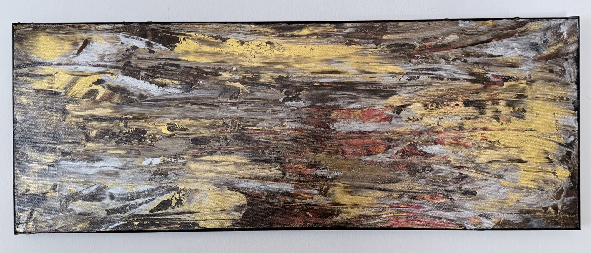

Eigenes Werkfoto einsetzen
Originale · Relief · Acryl
Struktur.
Kontrast. Tiefe.
Zeitgenössische Unikate zwischen ruhiger Eleganz und kraftvoller Bewegung – von Hand geschaffen in Aalen.
- 100 %
- Handarbeit
- 1/1
- Unikate
- Aalen
- Atelier

Ausgewählte Arbeiten
Kunst mit eigener Oberfläche
Jede Arbeit entsteht als Einzelstück. Die Werkfotos können anschließend direkt durch die Originalaufnahmen ersetzt werden.
Eigenes Werkfoto einsetzen
Eigenes Werkfoto einsetzen
Eigenes Werkfoto einsetzen
Eigenes Werkfoto einsetzen
Eigenes Werkfoto einsetzen
Über mich
„Mich interessiert der Moment, in dem aus Material eine spürbare Oberfläche wird.“
Albert Knaus
Ich bin Künstler aus Aalen. In meinen Arbeiten verbinde ich Acrylfarbe, Spachteltechnik und reliefartige Strukturen. Gold, Schwarz, Weiß und intensive Farbakzente treffen auf ruhige Flächen und klare Kanten.
So entstehen moderne Unikate mit Tiefe, Lichtwechsel und einer starken haptischen Wirkung – für Räume, in denen Kunst ein bewusster Blickfang sein darf.
Arbeitsweise
Vom Material zum Unikat
-
01
Struktur
Schicht für Schicht entstehen Relief, Kanten und sichtbare Spuren der Handarbeit.
-
02
Kontrast
Matte und glänzende Flächen, Ruhe und Bewegung werden gezielt gegeneinandergesetzt.
-
03
Oberfläche
Metallische Akzente und tiefe Farbtöne verändern ihre Wirkung mit Licht und Standort.
Kontakt & Ankauf
Interesse an einem Werk?
Fragen zu Verfügbarkeit, Preis oder Versand beantworte ich gerne persönlich. Bis die E-Mail-Adresse ergänzt ist, erreichen Sie mich über mein GitHub-Profil.
Kontakt über GitHubImpressum
Albert Knaus
Anschrift vor Veröffentlichung ergänzen
Aalen, Deutschland
E-Mail-Adresse vor Veröffentlichung ergänzen
Datenschutz
Diese statische Webseite verwendet selbst keine Analysewerkzeuge und setzt keine eigenen Cookies. Die Datenschutzerklärung für das Hosting über GitHub Pages muss vor der öffentlichen Freischaltung abschließend ergänzt und geprüft werden.